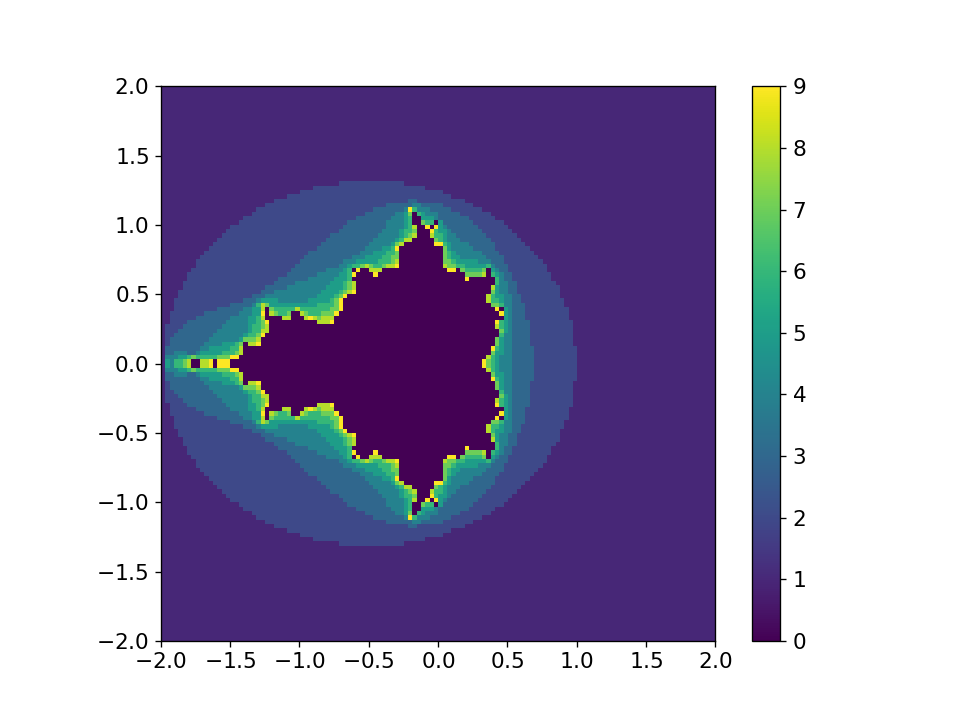

Packaging#
Let’s look at the structure of creating an installable python package. The python packaging system is constantly evolving, and the current recommendations of tools is list here: https://packaging.python.org/en/latest/guides/tool-recommendations/
Our example#
We’ll work on an example that builds on the Mandelbrot set exercise from our matplotlib discussion. Our example is hosted here:
On your local computer, if you have git installed, you can clone this via:
git clone https://github.com/sbu-python-class/mymodule.git
The directory structure appears as:
mymodule
├── mymodule
│ ├── __init__.py
│ └── mandel.py
└── README.md
This is a rather common way of structuring a project:
The top-level
mymoduledirectory is not part of the python package, but instead is where the source control (e.g. git) begins, and also hosts setup files that are used for installationmymodule/mymoduleis the actual python module that we will load.Important
To make python recognize this as a module, we need an
__init__.pyfile there—it can be completely empty.The actual
*.pyfiles that make up our module are inmymodule/mymodule
Right now, this package does not appear in our python search path, so
the only way to load it is to work in the top-level mymodule/
directory, and then we can do:
import mymodule.mandel
we could also do:
from mymodule.mandel import mandelbrot
setuptools#
The current python package recommendation are:
Installation:
pipto install packages from PyPIcondafor disctribution cross-platform software stacks
Packaging tools:
setuptoolsto create source distributionsbuildfor binary distributionstwineto upload to PyPI
We’ll look at how to use setuptools to package our library. See the
packaging guidelines here:
https://packaging.python.org/en/latest/guides/distributing-packages-using-setuptools/
The main thing we need to do is create a setup.py that describes our
package and its requirements:
Here’s a first setup.py:
from setuptools import setup, find_packages
setup(name='mymodule',
description='test module for PHY 546',
url='https://github.com/sbu-python-class/mymodule',
author='Michael Zingale',
author_email='michael.zingale@stonybrook.edu',
license='BSD',
packages=find_packages(),
install_requires=['numpy', 'matplotlib'])
Note
The packaging ecosystem is always evolving. There are 2 special config files that can
help customize the package and contain the defaults for other tools: setup.cfg and
pyproject.toml. See:
Installing#
We can use setup in a variety of ways. Two useful ways are:
Install:
python setup.py install --userThis will copy the source files into your install location (likely
~/.local/...) putting them into your python search path. Then you can use this package from anywhere.Development mode (https://setuptools.pypa.io/en/latest/userguide/development_mode.html):
python setup.py develop --userThis doesn’t actually install anything in your user- or site-wide install location, but instead it creates a special link in that install directory back to your actual project code.
This allows you to continue to develop the package without needed to re-install each time you change the source.
You can uninstall via:
pip uninstall mymodule
The above put the package in the user-specific install location
(because of the --user flag). If you leave this off, it will try to
install in the system-wide path, which might require admin privileges.
Using our module#
Once the module is installed, we can use it from any directory. For example, if we do:
import mymodule
print(mymodule.__file__)
it shows us where the module is installed on our system. In my case, it is:
/home/zingale/.local/lib/python3.11/site-packages/mymodule-0.0.0-py3.11.egg/mymodule/__init__.py
Let’s generate a plot:
from mymodule.mandel import mandelbrot
fig = mandelbrot(128)
fig.savefig("test.png")
This produces the plot shown below:
